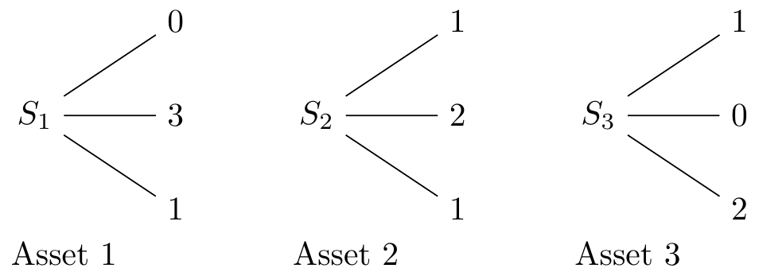

library(fBasics)
library(xtable)
library(empfin)
library(magick)
library(tufte)
library(dplyr)
library(ggplot2)
library(ggforce)
library(png)
library(grid)
library(ggraph)
library(igraph)We are exclusively concerned about the pricing of redundant securities, i.e. relative value pricing. Financial economics tries to explain the pricing of underlying securities, mathematical finance is about the relative value pricing of derivatives securities.
Consider three produce baskets of apples and oranges.
| Basket | Apples | Oranges | Price (€) |
|---|---|---|---|
| B1 | 2 | 3 | 4 |
| B2 | 3 | 2 | 5 |
| B3 | 2 | 2 | ? |
Is € 3.5 a fair price for basket B3? The answer is no: I can buy 5 baskets B3 and sell 2 baskets B1 and 2 baskets B1 for a riskless profit of €0.5. The fair price for B3 is 3.6 €. We have determined the arbitrage-free price for B3 by constructing a replication out of baskets B1 and B2. This is the essence of derivatives pricing.
Imagine an economy that can evolve between time \(t=0\) and \(t=1\) to take one out of 3 possible states. There is a consensus to attribute probability \(p_i\) to the occurence of state \(i\). The interest rate is null.
We next define 3 securities; each one pays a certain pattern of cashflow according to the future state, as pictured below:

Assume that prices at time \(t=0\) are: \(S_1 = 1.3\), \(S_2 = 1.25\), \(S_3 = 1.3\). The price of these securities is determined by several factors:
the preference of market participants for earning a payoff in one state versus another: in a risk-adverse economy, earning 1 euro when the aggregate wealth is low is more valuable than earning the same amount when the aggregate wealth is high
the preference for holding money today rather than at time \(T\)
the likelihood of each state
We are now interested in the price of securities that pays 1 euro if state \(i\) is realized, and nothing otherwise. Such securities are called Arrow-Debreu securities, and can be represented by a vector giving the value of such security in each future state of the world.
The value of the first Arrow-Debreu security is determined by solving the following system:
\[ \begin{pmatrix} 0 & 1 & 1 \\ 3 & 2 & 0 \\ 1 & 1 & 2 \end{pmatrix} W_1 = \begin{pmatrix} 1 \\ 0 \\ 0 \end{pmatrix} \]
which yields
P <- matrix(c(0, 3, 1, 1, 2, 1, 1, 0, 2), 3, 3)
A1 <- matrix(c(1, 0, 0), 3, 1)
W1 <- inv(P) %*% A1
W1## [,1]
## [1,] -0.8
## [2,] 1.2
## [3,] -0.2The value of the first Arrow-Debreu security is thus:
S <- matrix(c(1.3, 1.25, 1.3), 3, 1)
a1 <- t(W1) %*% S
print(a1[1, 1])## [1] 0.2Similarly, the prices \(a_2\) and \(a_3\) of the other two Arrow-Debreu securities are computed by:
W2 <- inv(P) %*% matrix(c(0, 1, 0), 3, 1)
a2 <- t(W2) %*% S
W3 <- inv(P) %*% matrix(c(0, 0, 1), 3, 1)
a3 <- t(W3) %*% SThe replicating portfolios and prices of the 3 A-D assets are summarized below.
% latex table generated in R 4.2.2 by xtable 1.8-4 package % Sun Jan 15 22:56:47 2023A portfolio made of the three Arrow-Debreu securities guarantees a payoff of 1 euro. Therefore, this collection can be priced at time \(t=0\) by discounting the payoff at the risk-free rate (0 for now). Thus, we must have:
\[\sum a_i = 1\]
Which is indeed the case:
print(a1 + a2 + a3)## [,1]
## [1,] 1The price of Arrow-Debreu securities is determined by the price of traded securities. We now consider how these price are determined.
The current price of an asset depends on the future payoffs, and on the states in which these payoffs occur: if the payoffs of an asset are positively correlated with the aggregate market value, it will be worth less, everything else being equal, than an asset whose payoffs are negatively correlated with the aggregate market value. The capital asset pricing model formalizes this observation. Let
Asset price at time \(t\)
Aggregate market wealth at time \(t\)
Return on asset: \(S_T/S_0\)
Market return: \(M_T/M_0\)
Risk-free return: \(1+r\)
The model relates the expected return of a security to the beta value:
\[E(R_s) = R_f + \beta [ E(R_m) - R_f ]\]
where
\[\beta = \frac{\mbox{Cov}(R_s, R_m)}{\mbox{Var}(R_m)}\]
In that framework, it can be shown that \(S_0\), the current asset price, is given by:
\[S_0 = \frac{E(S_T)-\lambda \mbox{Cov}(S_T, M_T)}{R_f} \tag{3.1}\]
where \(\lambda\) is the market price of risk times the current market value \(M_0\):
\[\lambda = \frac{M_0 [ E(R_m)-R_f ]}{\mbox{Var}(M_T)}\]
In a complete market, the asset and the market portfolio can be expressed in terms of Arrow-Debreu securities:
\[S_0 = \sum_i V_i a_i\]
\[M_0 = \sum_i U_i a_i\]
Assume that the states are ordered in order of increasing aggregate wealth. We have:
\[\begin{aligned} E(S_T) & = & \sum_i V_i p_i \\ E(M_T) & = & \sum_i U_i p_i \\ E(S_T M_T) & = & \sum_i U_i V_i p_i\end{aligned}\]
Substitute in (3.1) to get:
\[S_0 = \sum_i V_i d_i p_i\]
where the discount factor \(d_i\) is given by:
\[d_i = \frac{1-\lambda(U_i - E(M_T))}{R_f} \label{eq:capm2}\]
Equation (??) shows that as aggregate wealth \(U_i\) increases, the discount factor decreases. An asset is more valuable, everything else being equal, if its payoffs occur in the states where \(U_i\) is low, and therefore where the discount factor is high.
To generalize: any factor that affects supply and demand for traded securities, and the market price of risk, will have a direct influence on the Arrow-Debreu prices and therefore on the risk neutral probabilities.
As noted by Derman and Taleb((Derman2005?)),
The Nobel committee upon granting the Bank of Sweden Prize in honour of Alfred Nobel, provided the following citation: “Black, Merton and Scholes made a vital contribution by showing that it is in fact not necessary to use any risk premium when valuing an option. This does not mean that the risk premium disappears; instead it is already included in the stock price.” It is for having removed the effect of \(\mu\) \[the stock drift\] on the value of the option, and not for rendering the option a deterministic and riskless security, that their work is cited.
A complete market is a market where all Arrow-Debreu securities can be traded, and therefore any payoff profile can be replicated as a portfolio of Arrow-Debreu securities. The existence of this replicating portfolio imposes a unique arbitrage-free price for any payoff. Going back to the elementary example above, consider now a new security that has the payoff profile illustrated in figure \[fig:new-sec\].
\[grow’=right,sibling distance=1cm\] child node 1 child node -0.5 child node 1;
\[grow’=right,sibling distance=1cm\] child node 1 child node -0.5 child node 1;
This security is equivalent to a portfolio of three Arrow-Debreu securities, and is worth
V <- a1 - 0.5 * a2 + a3If its market price of \(S_4\) is less than \(V=0.62\), you can earn a riskless profit by buying a unit of \(S_4\) and selling the portfolio \(P\).
In general, a security with payoff \(X_i\) in state \(i\) is worth:
\[\sum_i a_i X_i\]
with
\[\sum_i a_i = 1\]
and
\[a_i >0, \ \ \forall i\]
and we can interpret the Arrow-Debreu prices as probabilities. Since preferences no longer play a role, we call them “risk-neutral” probabilities.
Two probability measures \(p\) and \(q\) are equivalent if they are consistent with respect to possible and impossible outcome:
\[p_i >0 \Leftrightarrow q_i >0\]
Let \(p\) be the real probability measure and \(q\) be the risk-neutral measure. It is easy to show that the two measures must be equivalent.
Consider a state \(i\) such that \(p_i = 0\). then the corresponding Arrow-Debreu security cannot cost anything, or a riskless profit could be gained by selling this security. Thus, \(q_i=0\). A similar argument applies for the case \(p_i>0\).
What happens to Arrow-Debreu prices and risk-neutral probabilities when interest rate is not null? In the presence of interest rate, the value of a complete set of Arrow-Debreu securities must be
\[\sum_i a_i = e^{-rT}\]
The risk-neutral probabilities are now defined as:
\[q_i = a_i e^{rT}\]
so that we still have \(\sum_i q_i = 1\). As before, an arbitrary security with payoff \(X_i\) in state \(i\) is worth,
\[P(X) = e^{-rT} \sum_i X_i q_i\]
or,
\[P(X) = e^{-rT} E^Q[X]\]
Risk-neutral probabilities are compounded Arrow-Debreu prices. Here, for expository purpose, we have derived risk-neutral probabilities from state prices, but in practice, we will do the opposite: to obtain state prices from risk-neutral probabilities.
Let’s now consider an economy where decisions can be made at various stages. This economy is illustrated in Figure \[fig:bin-tree-0\]. At the second time step, we have 3 distinct states, i.e. 3 Arrow-Debreu securities. If we only had one time step, we would need 3 linearly independent assets to construct these securities. Now, because of the intermediate trading opportunity, we may be able to construct the Arrow-Debreu securities with fewer (i.e. two) underlying assets. A market in which every Arrow-Debreu security can be constructed with a self-financing trading strategy is called dynamically complete.
Let’s consider again a two-stage economy. What can we say at time 0 about the expected value of a derivative at a future time \(t\)?
\[E_0^Q[P_t(X)], \forall t \geq 0\]
\[E_0^Q[P_t(X)] = e^{-2r}E_0^Q[X]\]
Now let’s consider the expected price at \(t=1\):
\[\begin{aligned} E_0^Q[P_1(X)] & = & E_0^Q[e^{-r}E_1^Q[X]] \\ E_0^Q[P_1(X)] & = & E_0^Q[e^{-r}E_0^Q[X]] \\ E_0^Q[P_1(X)] & = & e^{-r} E_0^Q[X]\end{aligned}\]
Similarly,
\[\begin{aligned} E_0^Q[P_2(X)] & = & E_0^Q[E_2^Q[X]] \\ E_0^Q[P_2(X)] & = & E_0^Q[X]\end{aligned}\]
The price of each state-dependent payoff grows at the risk-free rate, simply because this growth rate is incorporated in the definition of each risk-neutral probability with which we weight the state-dependent payoffs.
The expected price of any asset (as seen from time \(t=0\)) grows at the risk-free rate. Not the price, but the expectation of the price. Generalizing, we have:
\[P_0(X) = e^{-rt}E_0[P_t(X)], \ \forall t>0\]